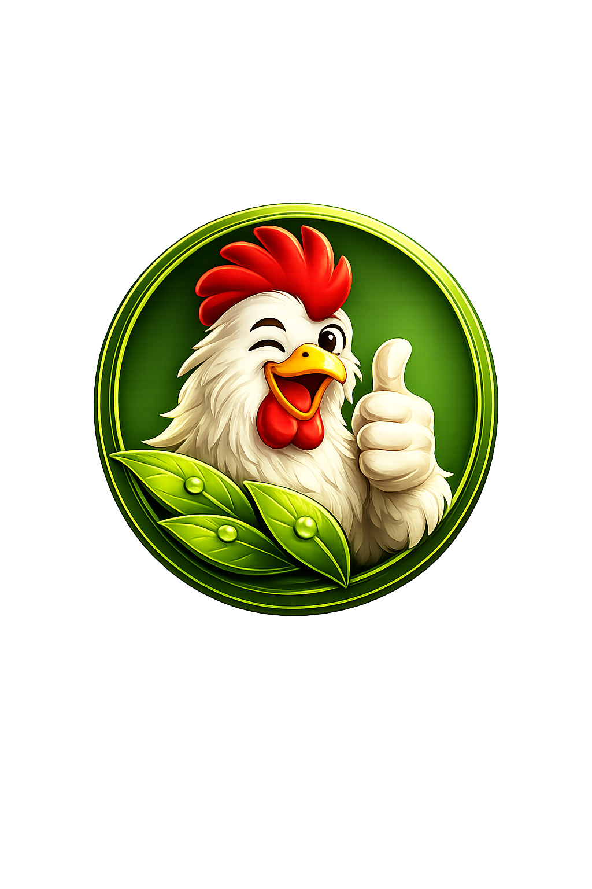

CUACA HARI INI
--°C
Mengambil data cuaca...
wb_sunny
water_drop
--%
air
-- km/j
location_on
Menunggu lokasi...
dashboard Memuat Dashboard...
Menghubungkan ke Google Sheets...

Farm Management Control System
Mengambil data cuaca...
Menghubungkan ke Google Sheets...
Smart Farming • Smart Decision • Better Productivity
FMC Broiler Mobile merupakan sistem manajemen peternakan broiler berbasis Progressive Web App (PWA) yang dirancang untuk membantu peternak melakukan monitoring, pencatatan, analisis, dan pengelolaan data secara real-time, cepat, akurat, dan efisien.
FMC Broiler Mobile dikembangkan sebagai sistem manajemen peternakan broiler modern yang ringan, cepat, responsif, dan mudah digunakan. Aplikasi ini dapat dijalankan langsung melalui browser sebagai Progressive Web App (PWA) tanpa proses instalasi, serta dapat diunduh dan dipasang sebagai aplikasi apabila diperlukan sehingga memberikan pengalaman penggunaan layaknya aplikasi Android. Dirancang untuk membantu peternak mengelola data produksi, performa flok, operasional, dan analisis keuangan secara lebih akurat, efisien, dan real-time. Seluruh informasi penting dapat diakses kapan saja dan di mana saja untuk mendukung pengambilan keputusan yang lebih cepat, tepat, dan berbasis data.
Gembus JavaScript Engine merupakan mesin inti yang menjadi fondasi pengembangan FMC Broiler Mobile. Engine ini bertanggung jawab dalam mengelola antarmuka pengguna, navigasi aplikasi, sinkronisasi data, pengolahan informasi, serta berbagai proses utama agar aplikasi tetap ringan, stabil, cepat, dan responsif pada berbagai perangkat. Dengan dukungan Progressive Web App (PWA), FMC mampu memberikan pengalaman penggunaan modern baik melalui browser maupun saat dipasang sebagai aplikasi.
"Menyediakan sistem manajemen peternakan broiler yang modern, ringan, mudah digunakan, dan dapat diakses oleh setiap peternak untuk meningkatkan produktivitas melalui pemanfaatan teknologi digital."